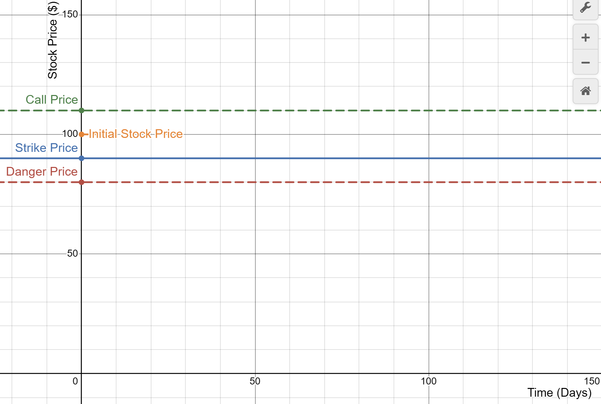

09/08/26 - 15/08/26
8 min read
Choose Language (Translation Errors may occur)
Disclaimer: The information provided is for educational purposes only. It does not constitute financial, investment, or personal advice. I am not a financial advisor or professional – I don’t know anything about the market or how it will perform (notice how I've used words like "perhaps" or "maybe"), thus the content here should not be taken as financial guidance. I am not a CFP, CPA, PFP or local legal equivalent, please seek professionals for financial advice, and by reading this you agree that I am not liable if I am wrong. Do your own research. The strategies, products, or services here are not being recommended, endorsed, or guaranteed. Past performance is not indicative of future results, and all investments carry risk, including the potential loss of principal.
Weekly Summary
- USDJPY falls to 159 even after joint intervention by both governments, as traders aren't convinced that the US will keep intervening. Traders continue to put bearish bets on Japan (selling the Yen), and have criticised the lack of coordination between them and the ECB (Note that the US sold Euros to buy Yen, yet the ECB was not involved, which signals to the market that there wasn't a unified voice). Traders are now betting that Japan will increase interest rates by 25 basis points to support its currency. Under this policy, analysts believe that carry trades are unlikely to unwind (and cause a market correction) as Japan's interest rates still lag behind other currencies.
- US long-term borrowing costs are at a 20-year high as their 30-year bonds yields soar to 5.22%. Debt-to-GDP is nearly at an all time high, and with higher bond yields, it will be difficult to repay in the future. With sustained inflation (over the FED's 2% target) and debt levels rising, investors have continued to demand higher rates to compensate for the extra risk of holding fixed income.
- Hong Kong is considering amending legislation to tax profits on investments as carried interest, benefitting family offices, trading firms, and venture capital firms. If said policy were to be implemented, it may attract more firms to set up offices in Hong Kong, potentially boosting the economy. Let's hope they employ me when that happens...
- Press groups sue Trump for commercialising government news with his new Truth API.
Updates on Individual Stocks
- Apollo, Blackstone and Goldman Sachs are arranging a $500 billion USD package to Nvidia, used for AI infrastructure development. When the news was announced Nvidia's stock dipped slightly, further emphasising investor's concerns over their debt sustainability and free-cash-flow.
- Shein has been approved by Chinese authorities to list in Hong Kong. It is estimated to list at a valuation of sub-$30 billion USD, which was much lower than private valuation. This is because since the private funding round, the company has been challenged by US tariffs, the removal of De Minimis treatment for Chinese exports (De Minimis previously allowed low-valued imports to enter the US tax-free), competition from rival Chinese brands (such as Temu) which have stolen market share, and rising transportation and energy costs.
- Goldman Sachs has been expanding into the asset management industry, agreeing to acquire ETF platform Neos Investments for about $2.3 billion USD. Goldman's CEO has been expanding their asset and wealth management (AWM) division to make them less reliant on trading profits (where returns are volatile).
Esoteric Options
Banks provide a variety of investments, and apart from the stocks and bonds we may be familiar with, they also issue structured products, in particular, equity-linked investments (ELI). These are kind of like bonds with properties of derivatives, and can provide greater yields compared to traditional time deposits, especially in bullish or sideways markets.
(In most cases, they are referred to as Daily Cash Dividend Callable (DCDC) ELIs. The following example illustrates a common setup for an ELI, and its structure can vary depending on the issuer and the terms in the contract. Note that this is not financial advice and does not constitute any investment recommendation. Please read the relevant terms of the offering documents.)
To set up the ELI, you need an underlying equity / basket of equities, a strike price, the danger line (known as the knock-in price), and a call price (knock-out price). The investment, as its name suggests, tracks the performance of the equity or basket of equities over a specified period, and every day the stock price closes above the danger line, you get a small cash dividend. Every day the stock price is on or below the danger line, you get no cash dividend for that day.
But the danger line does more than that. If the danger line is touched even once over the period, the bank (or issuer) gets the right to convert your principal (cash) into relevant shares of stock, valued at the strike price. And if the price of the stock is greater than the call price on an official observation date (determined by the offering documents), the bank gives you 100% of your investment back and the accumulated dividends.
Maybe this is quite hard to visualise so let's use an example. Suppose you put $100,000 in a DCDC ELI for a particular company, with a call price of $110, strike price of $90, danger price of $80, and the initial stock price on day 0 (the day the ELI is issued) is $100. The DCDC ELI has a duration of 5 days (meaning the contract ends in 5 days), with an official observation date on day 3.

Diagram of hypothetical DCDC ELI (Desmos).
There are many different possible paths the stock can take:
| Day 1 | Day 2 | Day 3 | Day 4 | Day 5 | |
|---|---|---|---|---|---|
| Case 1 | 102 | 104 | 115 | - ELI called - | - ELI called - |
| Case 2 | 94 | 92 | 90 | 88 | 87 |
| Case 3 | 90 | 85 | 80 | 75 | 83 |
| Case 4 | 100 | 80 | 70 | 90 | 93 |
Possible stock price movements for a hypothetical ELI.
For Case 1, the stock rose past the call price on the observation date, whihc caused the bank to stop the investment. Investors would recieve the principal amount ($100,000) and the dividends accumulated on days 1-3. For Case 2, the danger line was never touched, so you get back your principal and the dividends on days 1-5. For Case 3, the danger line is touched so you receive nothing on days 3 and 4, and the bank gets the right to convert your money into shares at the end of the period. Since the ending price of the stock is less than the strike price, the bank converts your money into shares (thus you will recieve \(\frac{100}{90}\) shares), which are only worth about \(\frac{100}{90} \times 83\), and get dividends from days 1, 2, and 5. For case 4, the danger line is touched, but since the final price is greater than the strike price, you get your principal back and dividends from day 1, 4, and 5. Days 2 and 3 are below the danger line so you do not receive any dividend.
Now let's take a look at an extreme scenario. Suppose immediately after purchasing the ELI, the company goes bankrupt, wiping out the entire value of equity. At the closing date, the stock price is 0. Then, the bank will pay you the accrued dividends, and \(\frac{100}{90}\) shares of the company, which has become completely worthless. Thus, for ELIs, your earnings are capped, but your losses can be unlimited.
Moreover, as ELIs are often unsecured, you face losses when the bank defaults or becomes insolvent over the period of the trade. As ELIs are supposed to be held till maturity and have limited market-making activity, you also face liquidity risks when selling your investment early. Most importantly, compared to bank deposits, ELIs aren't protected by deposit protection schemes. And valuation of ELIs involves running Monte Carlo Simulations* on the stock, which is probably too complex for the retail investor. If this is the price you pay for taking on marginally higher returns compared to time deposits, I think I'll pass and just put my money directly into bonds or the stock market instead.
(*Specifically, run Monte Carlo Simulations on the stock, calculate cash flows generated from the dividends and potential principal repayment, discount those at an appropriate rate, in order to calculate the fair value of the ELI.)
Bibliography
- Desmos. “Desmos Graphing Calculator.” Desmos, https://www.desmos.com/calculator. Accessed 20 Aug. 2026.